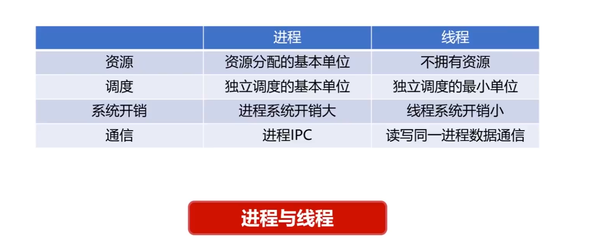
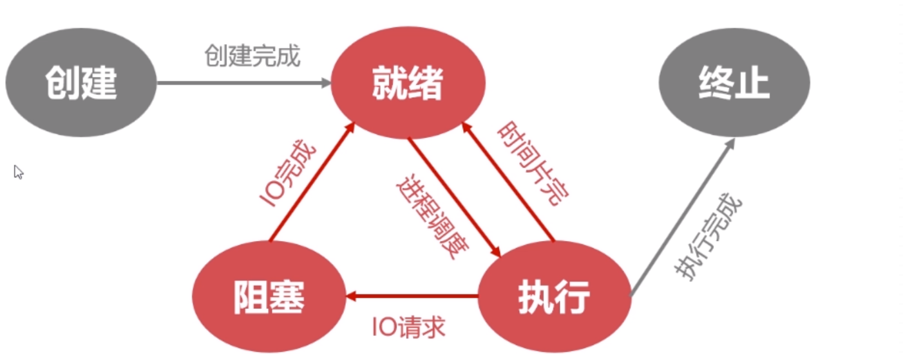
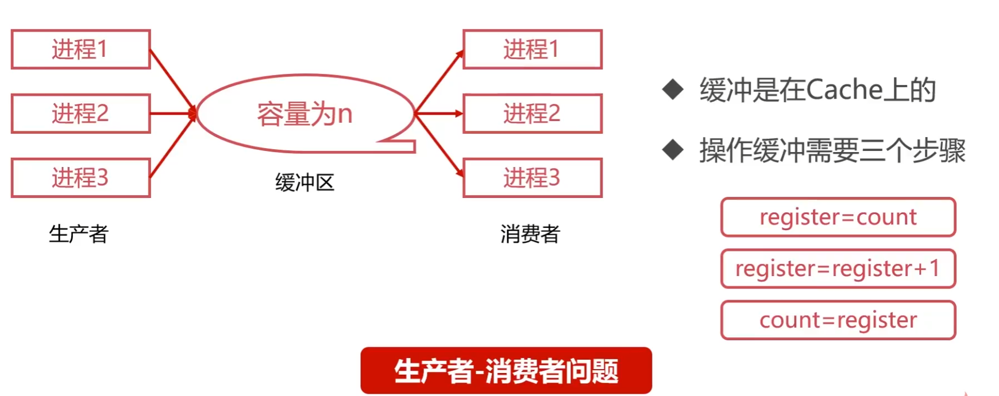
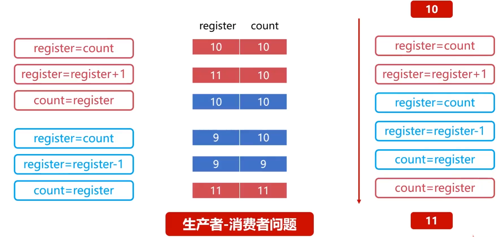
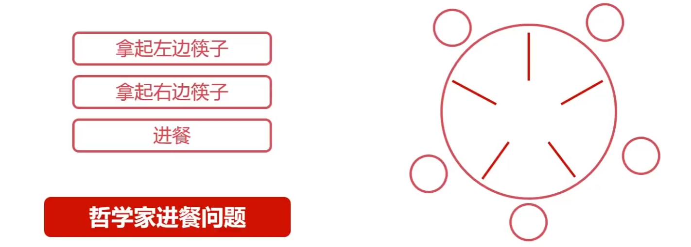
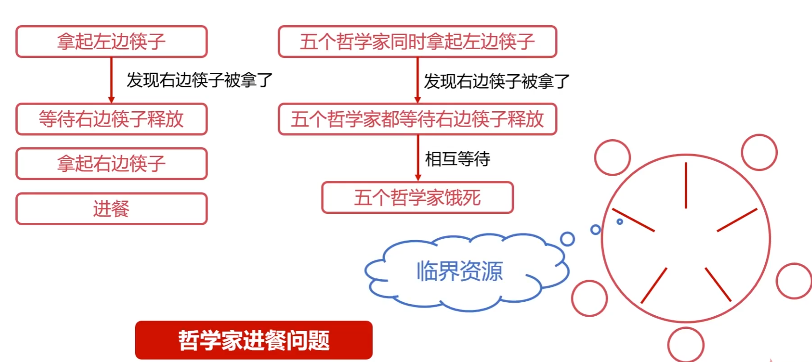
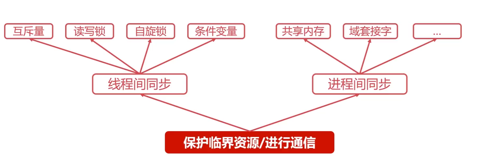

一、操作系统概述
1.1操作系统的定义和目标
定义：操作系统是控制管理计算机系统的硬软件，分配调度资源的系统软件。
目标：方便性，有效性（提高系统资源的利用率，提高系统的吞吐量），可扩充性，开放性。
1.2操作系统的基本功能
- 统一管理计算机资源：处理器资源，IO设备资源，存储器资源，文件资源；
- 实现了对计算机资源的抽象：IO设备管理软件提供读写接口，文件管理软件操作文件接口；
- 提供了用户与计算机之间的接口：GUI(图形化用户界面)，命令形式，系统调用形式。
1.3 操作系统的特征
最基本的特征，互为存在条件：并发，共享;
（1）并行：指的是两个或多个事件可以在同一时刻发生，多核CPU可以实现并行，一个CPU同一时刻只有一个程序在运行；
（2）并发：指的是两个或多个事件可以在同一时间间隔发生，用户看起来像是每个程序都在运行，但其实是 每个程序之间交替执行。
（3）共享性：操作系统中的资源可以供多个并发程序共同使用，这种形式称为 资源共享。
互斥共享：资源被程序占用时，其他想使用的程序只能等待。
同时访问：某种资源 并发 的被多个程序访问。
虚拟和异步特性的前提是具有并发性
（4）虚拟性：表现为把一个物理实体转变为若干个逻辑实体。
时空复用技术：资源在时间上进行复用，不同程序并发使用，多道程序同时使用计算机的硬件资源，提高资源的利用率。
空分复用技术：用来实现虚拟硬盘（物理磁盘虚拟为逻辑磁盘，如计算机C盘、D盘等），虚拟内存（在逻辑上扩大程序的存储容量）等，提高资源的利用率，提高编程效率。
（5）异步性：在多道程序环境下，运行多个进程并发执行，但由于资源等因素的限制，使进程的执行以“停停走走”的方式运行，而且每个进程 执行的情况（运行、暂停、速度、完成）也是 未知的。
1.4操作系统的中断处理
中断机制的作用：为了在多道批处理系统中让用户进行交互。
中断产生：
- 发生中断后，CPU立马 切换到管态开展管理工作；
- 发生中断后，当前运行的进程会回到暂停运行，由操作系统内核对中断进行处理；
- 对于不同的中断信号，会进行不同的处理。
中断的分类：
- 内中断（也叫“异常”、“例外“、”陷入”）——信号来源：CPU内部，与当前执行的指令有关；
- 外中断（中断）——信号来源：CPU外部，与当前执行的指令无关。
外中断的处理过程
- 每执行完一个指令后，CPU都要检查当前是否有外部中断信号；
- 如果检测到外部中断信号，则需要保护被中断进程的CPU环境（如程序状态子PSW，程序计数器PC，各种通用寄存器），把他们存储在 PCB(进程控制块) 中
二、进程管理
2.1进程管理之进程实体
为什么需要进程：
- 进程是系统进行 资源分配和调度的基本单位；
- 进程作为程序独立运行的载体保障程序正常执行；
- 进程的存在使得操作系统的资源利用率大幅度提升。
进程控制块 PCB ：用于描述和控制进程运行的通用数据结构，记录进程当前的状态和控制进程运行的全部信息，是进程存在的唯一标识。
进程（Process）和线程（Thread）：
- 线程：操作系统进行 运行调度的最小单位。
- 进程：系统进行 资源分配和调度的基本单位
区别和联系：
- 一个进程可以有一个或多个线程；
- 线程包含在进程之中，是进程中实际运行工作的单位；
- 进程的线程共享进程资源；
- 一个进程可以并发多个线程，每个线程执行不同的任务。

2.2进程管理之五状态模型
- 就绪状态：其它资源（进程管理块PCB、内存、栈空间、堆空间等）都准备好，只差CPU就位。
- 执行状态：进程获得CPU，其程序正在执行。
- 阻塞状态：进程因某种运行放弃CPU的状态，阻塞进程以队列的形式放置 。
- 创建状态：创建进程时拥有PCB但其它资源尚未就绪。
- 终止状态：进程结束后由系统清理或者归还PCB的状态。

2.3进程管理之进程同步
生产者-消费者问题：有一群生产者进程在生产产品，并将这些产品提供给消费者进行消费，生产者进程和消费者进程可以并发执行，在两者之间设置了一个具有n个缓冲区的缓冲池，生产者将所需要的产品放到缓冲区中（+1操作），消费者进程可以从缓冲区中取走产品（-1操作）。

在这个问题中，对缓冲区的加减操作分为三个步骤。如果直接对缓冲区进行操作可能会导致的问题如下：
- 竞态条件：当多个线程同时访问同一缓冲区时，可能会出现竞态条件，即多个线程尝试同时读写同一数据，导致数据不一致。
- 死锁：如果生产者和消费者在访问缓冲区时没有适当的同步机制，可能会导致死锁，即生产者等待消费者释放资源，而消费者又在等待生产者提供资源，双方都无法继续执行。
- 饥饿：如果没有适当的调度策略，可能会导致某个线程长时间无法访问到缓冲区，即饥饿现象。
即便如此，当两者 并发执行时仍会出错。当执行生产者+1和消费者-1操作之后，缓冲区的值从10变为了11。

哲学家进餐问题：有5个哲学家，他们的生活方式是交替的思考和进餐，哲学家们共同使用一张圆桌，分别坐在5张椅子上，圆桌上有5只碗和5只筷子。平时哲学家们只进行思考，饥饿时则试图取靠近他们的左右两只筷子，只有两只筷子都被拿到的时候才能进餐，否则等待，进餐完毕后，放下左右筷子进行思考。

在这个问题中，筷子就相当于临界资源：
临界资源指的是一些虽作为共享资源却又无法同时被多个线程共同访问的共享资源。当有进程使用临界资源时，其它进程必须依据操作系统的同步机制等待占用进程释放该共享资源才可重新竞争使用共享资源。

进程同步的作用：对竞争资源在多进程间进行使用次序的协调，使得并发执行的多个进程之间可以有效使用资源和相互合作。
进程间同步的四原则：
- 空闲让进：资源无占用，允许使用；
- 忙则等待：资源被占用，请求进程等待；
- 有限等待：保证有限等待时间能够使用资源；
- 让权等待：等待时，进程需要让出CPU。
2.3.1进程同步的方法
